Wildlife Health and Disease (IEE RAS; Wildlife Conservation Society)
Purpose: Cooperate in the study, prevention, and treatment of wildlife diseases of microbial, parasitic and chemical origin common to both countries
Application of Contemporary Technology in Ecological Studies of Large Mammals (IEE RAS, USGS)
Purpose: Develop joint methods to collect and process remotely-sensed microwave and optical data, integrate analyses of satellite data from telemetry and environmental remote sensing, and create database structures and models for ecological studies of large mammals in Arctic environments.
Marine Mammals
Study and Conservation of Polar Bears (FWS, MMM-7; MNRE)
MMM-7: Marine Mammals Management, FWS, Alaska
MNRE: Russian Ministry of Natural Resources and Environment
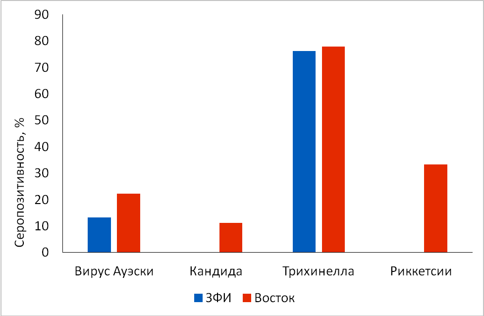 Serum prevalence of polar bears in region of Franz Josef Land (blue) in comparison to eastern Arctic (red) for pathogens: influenza A, canine distemper virus, Trichinella spiralis, Rickettsia) (from left to right). Extended from Naidenko et al. (2013).
Get more: Xth Internation Conference «Marine Mammals of Holarctic» 2018; Arkhangelsk, Wednesday, 31 October, Hall no.2, 16:30, Sergey Naidenko.
Aim: to reveal the role of terrestrial food sources in the diet of polar bears spending ice-free period on land of the Frans Josef Land archipelago (Ivanov et al., 2018).
Comparison with published results (Bentzen et al., 2007; Cardona-Marek et al., 2009; Polischuk et al., 2001).
Get more: Xth International Conference «Marine Mammals of Holarctic» 2018; Arkhangelsk, Thursday, 01 November, Hall no.2, 18:00, Evgeny Ivanov.
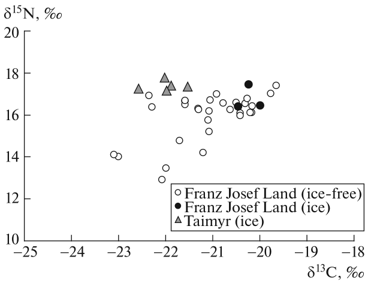
The isotopic composition of blood from polar bears captured on Franz Josef Land and on Taimyr in the ice-free (August-November) and in the ice (April-May) periods. Each point corresponds to one specimen.
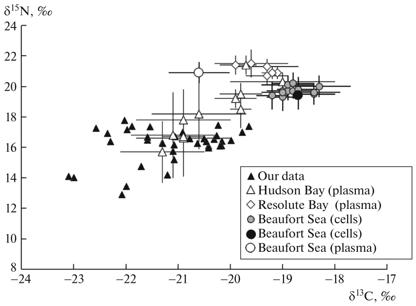
The isotopic composition of the blood of polar bears in comparison with literature data. The results of individual measurements or the mean values for the entire sample are presented. M±SD, n = 2-47.
Occurrence and density of polar bears and their food in the zone of fast ice, on the coast and the islands of the Kara Sea for assessing the state of the population under conditions of climate change and anthropogenic load.
Ultralight Sterkh-1S aircraft
Works were supported by “Rosneft” Oil Company.
Get more: Xth International Conference «Marine Mammals of Holarctic» 2018; Arkhangelsk, Thursday, 01 November, Hall no.2, 11:45, Ilia Mordvintsev.
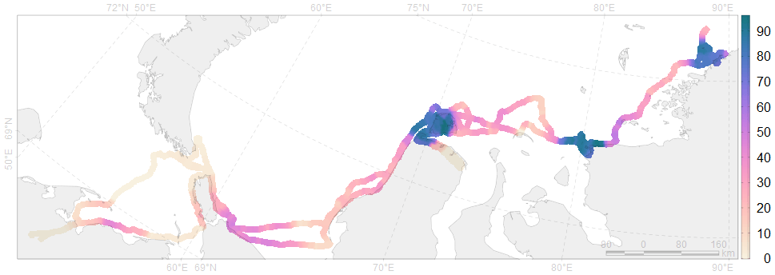 Seal density (individuals per 50 km of route), sea ice concentration and registration of polar bear activity by 9 days of flight (6035 km) during May 2018.
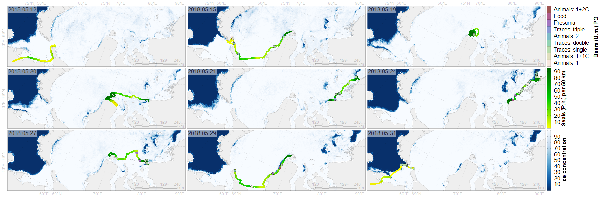
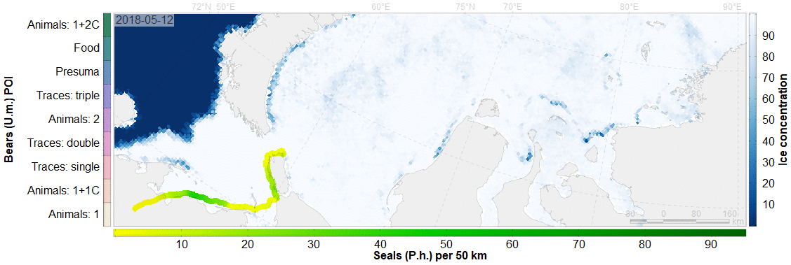
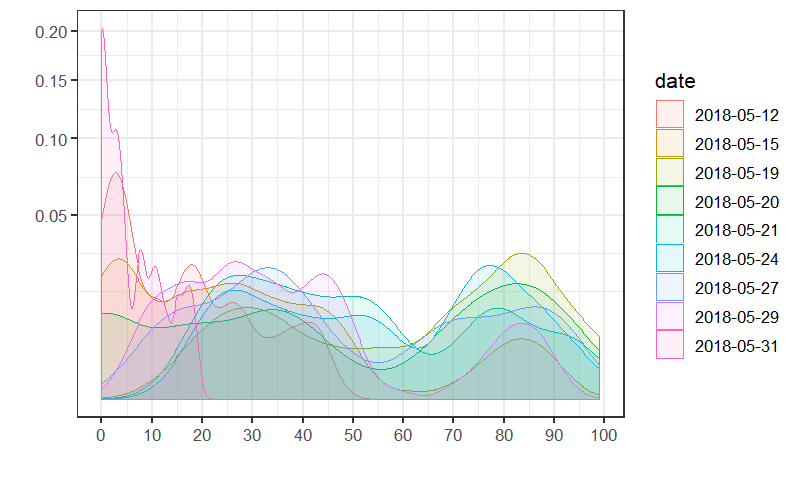
Density of seals occurrence per 50 km of route.
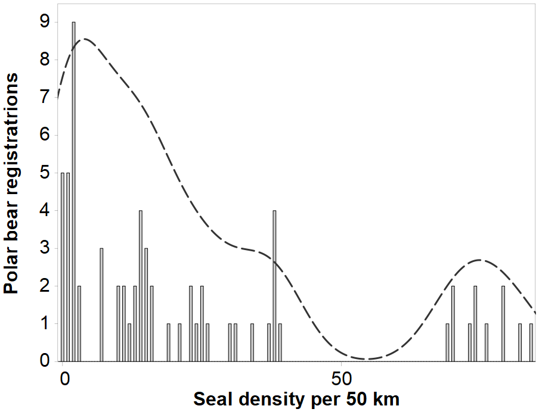
Density of seals occurrence per 50 km of route at the points of registration of polar bear activity.
Method MDSDA (Belchansky et al., 2004)
Service for evaluation of polar bear demographic parameters.
Principal feature: history of population structure with explicit mother-cub relations.
Hosted on https://github.com/nplatonov/demography (standalone and shiny apps).
Get more: on Xth International Conference «Marine Mammals of Holarctic» 2018; Arkhangelsk, Tuesday, 30 October, Hall no.2, 14:30, Nikita Platonov.
COY litter size: 1.63.
Cub fractions (1C, 2C, 3C) simulation: 0.371, 0.625, 0.003.
Mortality of dependent COY: 0.27
Mortality of adult (in the green): 0.095
Maximal age: 36
Birth success: 0.65
Fraction of broken families with yearlings: 0.6
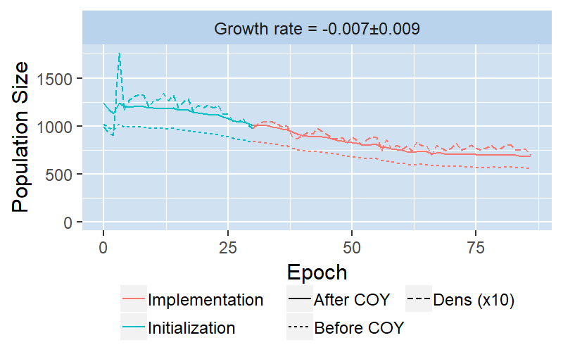
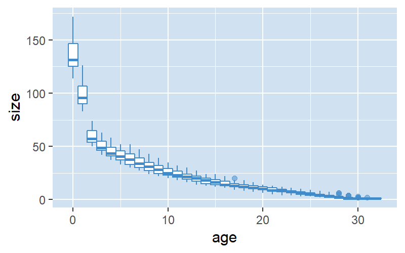
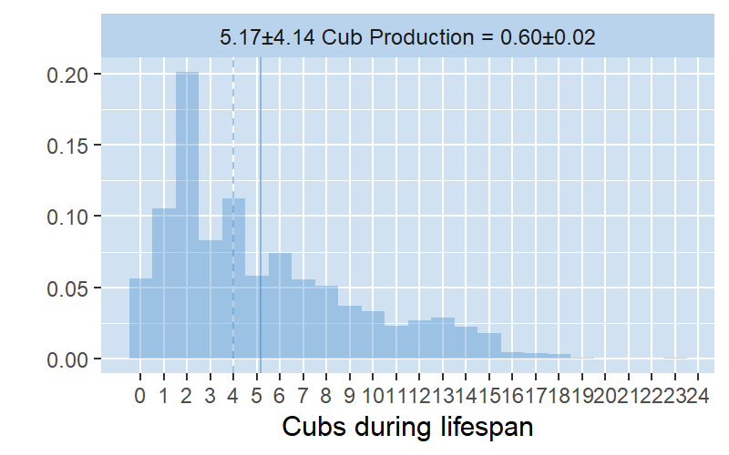
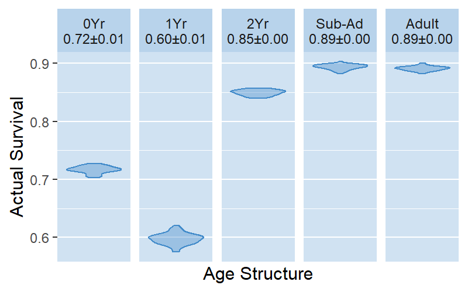
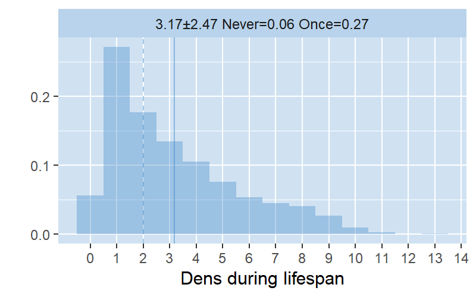
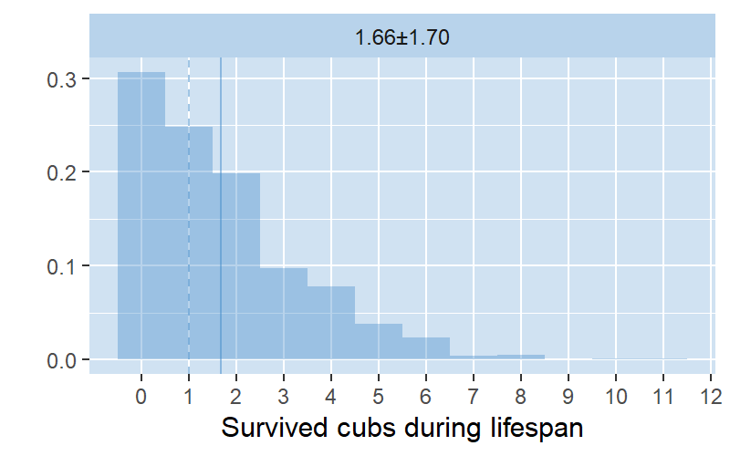
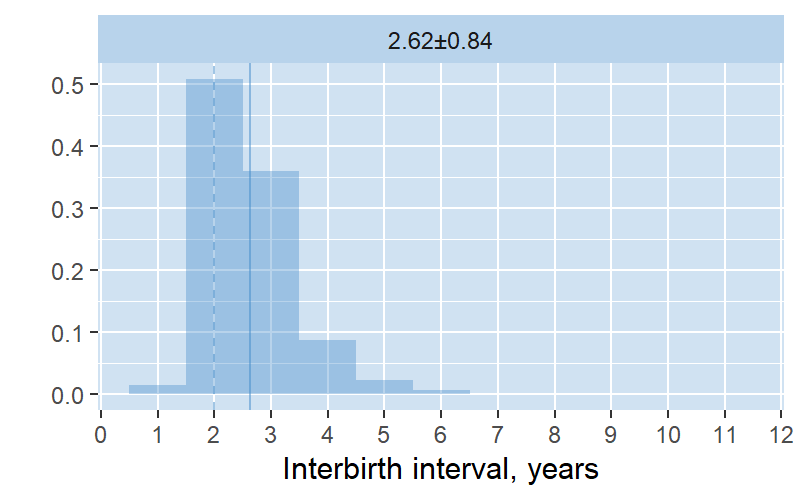
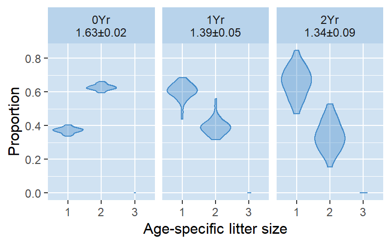
Belchansky GI, Douglas DC, Mordvintsev IN, Platonov NG. 2004. Estimating the time of melt onset, melt duration and freeze onset over Arctic sea-ice area using active and passive microwave data. Remote Sensing of Environment, 92(1): 21–39. doi:10.1016/j.rse.2004.05.001.
Bentzen T, Follmann E, Amstrup S, York G, Wooller M, O’Hara T. 2007. Variation in winter diet of southern beaufort sea polar bears inferred from stable isotope analysis. Canadian Journal of Zoology, 85(5): 596–608. Canadian Science Publishing. doi:10.1139/z07-036.
Cardona-Marek T, Knott KK, Meyer BE, O TM. 2009. Mercury concentrations in southern beaufort sea polar bears: Variation based on stable isotopes of carbon and nitrogen. Environmental Toxicology and Chemistry, 28(7): 1416. Wiley. doi:10.1897/08-557.1.
Ivanov EA, Mordvintsev IN, Platonov NG, Naidenko SV, Tiunov AV, Rozhnov VV. 2018. Isotopic composition of blood of polar bears (Ursus maritimus) of the Kara-Barents Sea population. Doklady Biological Sciences, 480(1): 93–96. Pleiades Publishing Ltd. doi:10.1134/s0012496618030055.
Naidenko SV, Ivanov EA, Mordvintsev IN, Platonov NG, Ershov RV, Rozhnov VV. 2013. Seropositivity for different pathogens in polar bears (Ursus maritimus) from Barents Sea islands. Biology Bulletin, 40(9): 779–782. Pleiades Publishing Ltd. doi:10.1134/s1062359013090082.
Polischuk SC, Hobson KA, Ramsay MA. 2001. Use of stable-carbon and -nitrogen isotopes to assess weaning and fasting in female polar bears and their cubs. Canadian Journal of Zoology, 79(3): 499–511. Canadian Science Publishing. doi:10.1139/z01-007.